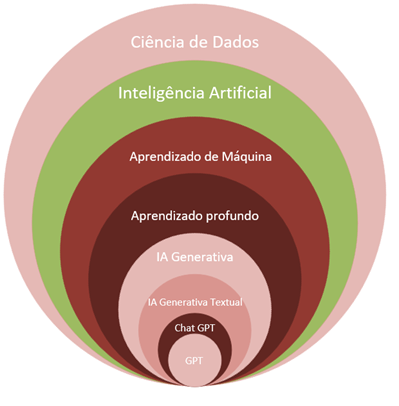
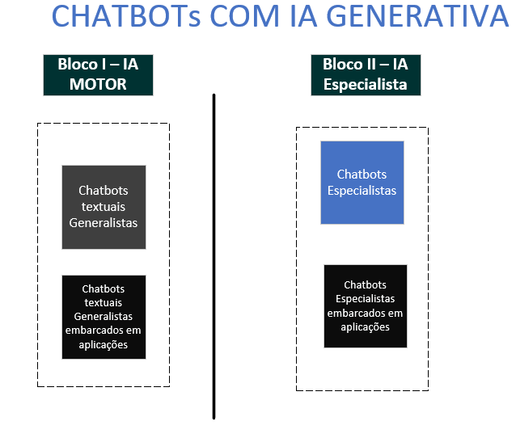
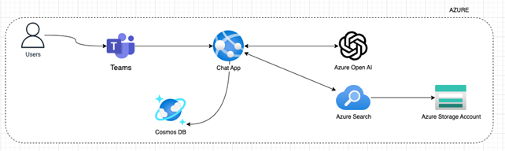
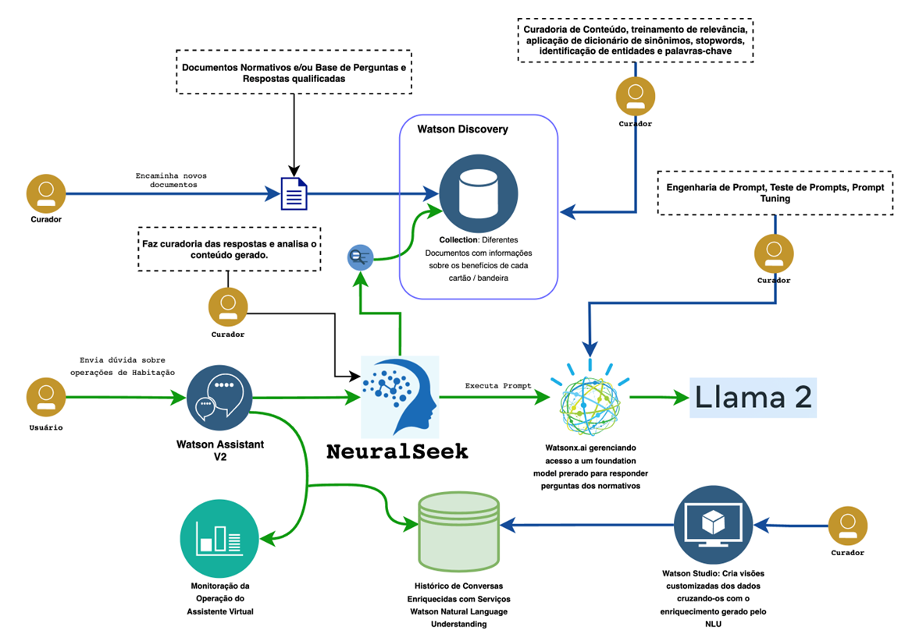
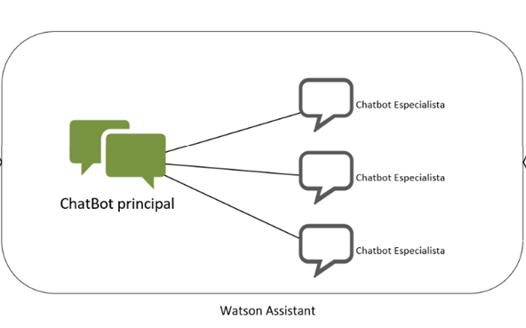

Chatbot
Importante: Arquitetura de Referência para uso RESTRITO sob gestão do COE de Inteligência Artificial – Caixa Postal CXIAR@CAIXA.GOV.BR
OBJETIVO
O objetivo deste documento é definir a arquitetura referência para o desenvolvimento e utilização de Chatbots que utilizem Inteligência Artificial Generativa Textual na CAIXA, bem como, padrões e tecnologias a serem utilizados. O documento também deve servir como um guia para direcionar a tomada de decisões sobre quando utilizar cada arquétipo arquitetural e avaliar a viabilidade de novos componentes conforme as estratégias de negócios e premissas estabelecidas pela área responsável - SUART.
CHATBOT
É um programa de computador que simula e processa conversas (escritas ou faladas), permitindo que as pessoas interajam como se estivessem se comunicando com uma pessoa real. Os chatbots podem ser tão simples quanto programas rudimentares que respondem a uma consulta com uma resposta de linha única ou tão sofisticados quanto assistentes digitais que aprendem e evoluem.
Inteligência Artificial
Segundo a empresa especializada Gartner em seu artigo “O que é inteligência artificial?”:
- A inteligência artificial pode ser definida como a aplicação de análises avançadas e técnicas baseadas em lógica, incluindo machine learning, para interpretar eventos, apoiar e automatizar decisões e realizar ações.
Essa definição está de acordo com o estado atual e emergente das tecnologias e recursos de IA e reconhece que a atual inteligência artificial geralmente envolve análise probabilística, ou seja, a probabilidade é combinada com a lógica para atribuir valor à incerteza.
Contudo, outras organizações e indivíduos podem usar definições diferentes. Não há uma descrição única para inteligência artificial porque existem inúmeras maneiras nas quais a IA pode apoiar e automatizar atividades humanas, aprender e agir independentemente
Conceitualmente a inteligência artificial é um campo da Ciência da Computação que se dedica ao estudo e ao desenvolvimento de máquinas e programas computacionais capazes de reproduzir o comportamento humano na tomada de decisões e na realização de tarefas, desde as mais simples até as mais complexas.

Pode-se classificar a IA é de acordo com o tipo de resultado que ela produz, ou seja, se ela é capaz de gerar novos dados ou apenas analisar dados existentes. Nesse sentido, tem-se duas categorias: IA analítica e IA generativa.
-
A IA analítica é a que utiliza dados existentes para extrair informações, fazer previsões, tomar decisões ou realizar ações. É a forma mais comum e tradicional de IA, e abrangendo sistemas de recomendação, diagnóstico médico, reconhecimento facial, detecção de fraudes, dentre outros. Utiliza técnicas como aprendizado supervisionado, aprendizado não supervisionado, aprendizado por reforço, árvores de decisão e diversos outros.
-
A IA generativa, por sua vez, é aquela que utiliza dados existentes para criar novos dados, como texto, imagem, vídeo, música ou código. Abrange aplicações como síntese de voz, tradução automática, geração e análise de textos e imagens, composição musical, dentre outras.
A base da IA generativa é a aprendizagem profunda (Deep Learning), um tipo de Machine Learning que imita o funcionamento do cérebro humano no processamento de dados e na geração de padrões para a tomada de decisões. Os modelos de aprendizagem profunda utilizam arquiteturas complexas conhecidas como redes neurais artificiais. Tais redes incluem diversas camadas interconectadas que processam e transferem informações, imitando o comportamento dos neurônios do cérebro humano;
IA GENERATIVA TEXTUAL
As inteligências artificiais generativas criam informações a partir de conjuntos de dados pré-existentes. Essas IAs foram "treinadas" a partir de grandes bases de dados, e se tornaram capazes de entender o padrão de construção desses dados. A partir deste momento, se tornam capazes de gerar novos dados, semelhantes aos utilizados para ensinar a IA, mas que podem ser únicos e originais.
Quando o retorno fornecido por esta IA ocorre somente no formato de texto, passamos a chamá-la de Inteligência Artificial Generativa Textual;
A interação do usuário com a IA é feita através de textos, ao texto enviado pelo usuário à IA damos o nome de prompt;
Os termos IA, IA Generativa e correlatos, deste ponto em diante do documento estarão se referindo à Inteligência Artificial Generativa Textual;
Ajuste Fino de Modelos de IA - Fine-Tunning
Os modelos de IA Generativa já estão treinados previamente pelo fabricante/fornecedor, no entanto pode-se achar necessário refazer esse treinamento, para tornar o modelo mais adequado para aplicações específicas, este treinamento requer um investimento de esforço (o treinamento não é automático, exige dados extras e a participação de especialistas técnicos dos elementos). A este treinamento "customizado" damos o nome de Fine-Tunning (ajuste fino);
É vedada a realização de Fine Tunning nos modelos de IA Generativa utilizados na CAIXA, identificada necessidade de realização desse procedimento para atendimento de caso de uso específico, a área de arquitetura deverá ser acionada para avaliação.
Classificação do Chatbot com IA

Para fins de organização, as implementações de chatbot com IA dentro da CAIXA devem considerar as classificações lógicas a seguir;
Bloco I -- IA's como motor de inteligência
Este bloco engloba os chatbots que utilizam a IA como um "motor de inteligência". São IA's que fornecem respostas por meio de seus modelos pré-treinados (sem Fine Tunning), a partir das perguntas fornecidas pelo pelo usuário. Desta forma podem ser considerados chatbots generalistas, pois utilizarão o conhecimento generalista pré-treinado para fornecer respostas;
São classificados neste bloco os modelos de Inteligência artificiais generativas pré-treinados, que [não] precisem de:
-
Serem especializados em uma tarefa (treinamento - Fine Tunning);
-
Utilizar em sua base de conhecimentos (pré-carregados) dados específicos (Ex: Normativos, leis, bases de conhecimento, faqs, bancos de dados de um sistema interno, dentre outros).
Bloco II -- IA's especialistas e/ou utilizando dados específicos
Este bloco engloba os chatbots que, além da utilização do modelo de IA pré-treinados, precisem de mais informações para alcançar seus objetivos. Dessa forma serão chamados de Chatbots Especialistas;
São classificados neste bloco os modelos de Inteligência artificiais generativas pré-treinados que [necessitem] de um dos itens abaixo:
-
Utilizar em sua base de conhecimentos (pré-carregados) dados específicos (Ex: Normativos, leis, bases de conhecimento, faqs, bancos de dados de um sistema interno, dentre outros);
-
Utilizar em sua base de conhecimentos (pós-carregados) dados brutos (Ex: índices, planilhas, documentos que não puderem ser colocados no prompt, dentre outros);
Para as necessidades de IAs que se enquadrem em quaisquer dos blocos, a área de negócio interessada deve procurar e realizar o envolvimento das áreas de atendimento de TI, conforme os procedimentos e normas internas da Caixa em vigor;
Arquitetura CAIXA
Esta arquitetura de referência prevê a utilização de chatbots com IA Generativa Textual em aplicações que estejam devidamente instanciadas em nuvem Microsoft ou IBM;
As versões dos LLM's a serem utilizadas dependerão de disponibilidade provida pelos fornecedores/fabricantes, no melhor interesse da CAIXA, visando a economicidade de recursos e o atendimento da necessidade do negócio.
Aplicações CAIXA hospedadas Azure Microsoft deverão utilizar a arquitetura Microsoft para implementação de chatbots para otimização dos recursos e desempenho.
Aplicações CAIXA hospedadas em Nuvem IBM deverão utilizar a arquitetura IBM para implementação de chatbots para otimização dos recursos e desempenho.
A escolha da utilização de uma das arquiteturas descritas a seguir, deve levar em conta o custo benefício com seus aspectos monetários e as necessidades de cada projeto.
As arquiteturas indicadas para a construção de aplicações de chatbots com uso de IA Generativa Textual são as seguintes:
Arquitetura Microsoft
Apresentamos a seguir os elementos da arquitetura da Microsoft que poderão ser utilizados, conforme segue:
| Nome | Elemento | Descrição | Ferramentas |
|---|---|---|---|
| Chat App | Bot | Web Application com lógica para o Bot e acessos aos modelos do open AI e documentos proprietários através do mecanismo de busca do search | Azure Web Application |
| Azure Open AI | LM | Modelos LLM para uso de Gen AI | Azure Open AI |
| Teams | UI | Interface para conversação com o Bot | Teams |
| Cosmos DB | Base de dados | Base para armazenamento do histórico de conversas e estado das interações | Azure Cosmos DB |
| Azure Search | Mecanismo de Busca | Estrutura para indexação dos ocumentos a serem utilizados como origem para a AI Generativa | Azure AI Search |
| Az. Storage Account | Storage | Estrutura para armazenar os documentos que serão indexados pelo AI Search e consumidos pelo Bot + AI | Azure Storage Account |
Tabela 1- Elementos da Arquitetura - Microsoft
A seguir apresenta-se cenário de combinação dos elementos aplicados a um caso de utilização de Chatbot pelo Teams consumindo serviços de IA GEN OpenAI:

O item ChatApp representado na figura acima é constituído pelo ChatBot principal e o Chatbot Especialista. O ChatBot principal representa o Chatbot CAIXA solução que fará a concatenação de Chatbots especialistas que serão criados por linhas de negócio.
O ChatBot CAIXA, arquitetura Microsoft, será de responsabilidade do COE de Inteligência Artificial.
Dessa forma, privilegiando a melhor experiencia ao usuário que tratará em um mesmo chat as necessidades de linhas de negócio distintas, visto que o acionamento ao Chatbot especialista será automaticamente realizado pelo Chatbot CAIXA conforme representação a seguir:
A arquitetura de solução poderá conter combinação diversa dos Elementos da Arquitetura – Microsoft constantes na Tabela 1- Elementos da Arquitetura - Microsoft, conforme necessidade de cada caso de uso e caberá ao Arquiteto responsável pelo projeto a sua composição.
Para acesso a solução por outras aplicações deve-se fazê-lo via HTTPS através de um endpoint de API autenticado, utilizando chaves de API provisionadas na Azure Cloud pela Azure Open AI e Azure Search;
Arquitetura IBM
Para criação de Chatbot utilizando IA Generativa textual, deve-se utilizar a seguinte arquitetura:

O item Watson Assistant representado na figura acima é constituído pelo ChatBot principal e o Chatbot Especialista. O ChatBot principal representa o Chatbot CAIXA solução que fará a concatenação de Chatbots especialistas que serão criados por linhas de negócio.
O ChatBot CAIXA, arquitetura IBM, será de responsabilidade do COE de Inteligência Artificial
Dessa forma, privilegiando a melhor experiencia ao usuário que tratará em um mesmo chat as necessidades de linhas de negócio distintas, visto que o acionamento ao Chatbot especialista será automaticamente realizado pelo Chatbot CAIXA conforme representação a seguir:

Para acesso à arquitetura por outras aplicações deve-se fazê-lo via HTTPS através de um endpoint de API autenticado,utilizando chaves de API provisionadas na IBM Cloud;
Como principais elementos dessa solução, serão utilizados os serviços conforme descritos na Tabela 2 - Elementos da Arquitetura - IBM:
|
Nome |
Elemento |
Descrição |
Ferramentas |
|
Watson Assistant |
Estruturador |
Responsável por
gerenciar a estrutura da conversa, seu fluxo, identificação de intenções e
integrações com outros sistemas, incluindo Microsoft Teams, outros sistemas
da CAIXA, etc |
Watson Assistant |
|
NeuralSeek |
Orquestrador
de perguntas |
Serviço da IBM Cloud
responsável por orquestrar as perguntas realizadas via Assistente Virtual,
integrando a base de conhecimento e o ambiente de IA Generativa. |
NeuralSeek |
|
Watson Discovery |
Gerenciador
de base de conhecimento |
Responsável por
manter a base de conhecimento, sendo capaz de entender documentos não
estruturados e extrair dados como palavras chave,
entidades e identificar sessões de conteúdo |
Watson Discovery |
|
Watsonx.ai |
Executador de modelos |
Responsável pela
execução de modelos Generativos. Neste ambiente é possível realizar a
preparação dos modelos, construir prompts, testar soluções generativas,
etc |
Watsonx.ai |
|
Watson Studio |
Monitoração
e debug |
Ambiente de Ciência
de Dados que pode ser utilizado para investigar e analisar os dados gerados
pela monitoração e coleta de logs das conversas |
Watson
Studio |
Tabela 2 - Elementos da Arquitetura - IBM
A arquitetura de solução poderá conter combinação diversa dos Elementos da Arquitetura -- IBM constantes na tabela acima conforme necessidade de cada caso de uso e caberá ao Arquiteto responsável pelo projeto a sua combinação.
IA On-Premisses
Não há previsão de utilização de chatbot com IA Generativa hospedadas nos Datacenters da CAIXA;
ARQUITETURAS CORRELATAS
Para sua implantação, devem ser observadas todas as arquiteturas de referência em vigor, destacando as seguintes:
-
Nuvem: conforme disponível em http://arquiteturati.dep.caixa/latest/nuvem/infraestrutura_nuvem/
-
Segurança: conforme disponível em http://arquiteturati.dep.caixa/latest /seguranca/seguranca/
-
Dados: conforme disponível em http://arquiteturati.dep.caixa/latest 0/dados/introducao/
-
Aplicação: conforme disponível em http://arquiteturati.dep.caixa/latest /api/api/
OBSERVAÇÕES
Legislação
Até o presente momento não há legislação nacional específica para o uso de inteligência artificial em vigor, diante deste cenário devem ser observadas as normas CAIXA.
Aspectos Gerais
Demais ferramentas, componentes, elementos não constantes desta arquitetura de referência estão vedados e em caso de necessidade de utilização deverá ser submetida justificativa para análise e autorização da área de arquitetura TI.
As IA's generativas não devem ser confundidas com RPA's (Automação Robótica de Processos). As IA's generativas não devem ser utilizadas para gerar, sem a interferência humana ou de um RPA, ações em aplicações terceiras;
Antes da implementação de qualquer projeto ou solução que utilize chatbots com IA Generativa deve se avaliar previsão contratual de créditos ou equivalente, que permitam a utilização da solução em produção, sendo responsabilidade do gestor, o levantamento de volumetrias atuais e projetadas, bem como encaminhamento das seguintes informações acompanhadas do caso de negócio para o COE de Inteligência Artificial CXIAR@CAIXA.GOV.BR.
-
As volumetrias levantadas devem trazer obrigatoriamente, no mínimo:
-
Quantidade de usuários finais, escalonada por períodos se for o caso;
-
Quantidade de chamadas por usuário/por período;
-
Extensão média e máxima dos prompts enviados;
-
Extensão média e máxima dos prompts recebidos;
-
Para que um sistema que utilize chatbots com IA Generativa entre em produção, deve ser feito pelo gestor do sistema, uma bateria de testes que evidencie o percentual de acerto das respostas bem como a qualidade das mesmas. O gestor do sistema deve prever testes periódicos, com intervalo máximo semestral, para avaliar o desempenho de sua aplicação e a realização contínua da curadoria e melhoria das respostas fornecidas pela IA;
Não deverão ser utilizados chatbots com IA's embarcados/acoplados em sistemas CAIXA pois poderão impactar o fluxo do processo de negócio, devido aos fatores que seguem:
-
Indisponibilidade da IA impactando o funcionamento do sistema;
-
Limitação na quantidade de chamadas/respostas por parte da IA;
-
Falibilidade de respostas de uma IA;
-
Possibilidade de chamadas automáticas recursivas descontroladas em backend à IA, visto que estas chamadas resultam em custos à CAIXA;
Casos de exceção deverão ser tratados mediante solicitação de Avaliação de Arquitetura de Solução TI.
A utilização de inteligência artificial deve ser tratada em todos os casos como acessória ao ser humano.
Casos típicos de aplicação: sínteses de textos, geração automática de textos, análise e interpretação de documentos extensos e/ou numerosos, e pesquisas textuais;
A utilização de chatbots com IA Generativa dentro de arquiteturas de solução para atendimento direto ao público externo é vedada, ou seja, casos em que o cliente da CAIXA se relacione diretamente com IA Generativa fornecida pela CAIXA, sem a interpretação, intermediação e/ou análise de funcionário ou prestador a serviço da CAIXA;
Curadoria
Entende-se por curadoria a análise das respostas e interações emitidas pela IA, a fim de verificar e validar as respostas emitidas;
O resultado obtido pela Inteligência Artificial Generativa Textual deverá ser validado constantemente, com realização de curadoria adequada pelo responsável da informação;
A curadoria serve para controlar e dar visibilidade ao desempenho da IA, de forma a mostrar rapidamente como a IA se comporta;
A curadoria pode ser:
-
Automática/automatizada;
-
Por feedback do usuário final;
-
Por feedback de um especialista;
As aplicações que utilizem IA devem apresentar curadoria periódica das respostas;
Definimos ser obrigatória a curadoria por feedback de um especialista;
O gestor da aplicação deve implementar processos formais de curadoria;
A curadoria pode ser implementada através de processos dentro da aplicação, do ambiente e/ou workaround manuais, utilizando a análise de logs, históricos e intervenções humanas nas bases de dados e/ou outros métodos que se mostrem efetivos;
É papel do gestor instituir uma periodicidade para a curadoria, associada aos testes tratados neste tópico.
Histórico
As aplicações que utilizem chatbots com IA Generativa devem guardar trilha de auditoria, sendo o período de guarda aderente às necessidades normativas e legais de cada sistema;
A trilha de auditoria guardada deve incluir os prompts enviados e suas respostas, associados ao usuário e marca temporal, de forma que possam ser associadas a todas estas informações;
As soluções de chatbots com IA Generativa deverão prever, obter, armazenar e arquivar a expressa declaração do usuário, no sentido de se responsabilizar pelas tomadas de decisão indicadas/sugeridas pela IA.
Glossário
Ciência de dados [3]: A ciência de dados é o estudo dos dados para extrair insights significativos para os negócios. Ela é uma abordagem multidisciplinar que combina princípios e práticas das áreas de matemática, estatística, inteligência artificial e engenharia da computação para analisar grandes quantidades de dados. Essa análise ajuda os cientistas de dados a fazer e responder perguntas como o que aconteceu, por que aconteceu, o que acontecerá e o que pode ser feito com os resultados.
IA [1]: inteligência artificial pode ser definida como a aplicação de análises avançadas e técnicas baseadas em lógica, incluindo machine learning, para interpretar eventos, apoiar e automatizar decisões e realizar ações.
Aprendizado de Máquina (Machine Learning) [1]: uma disciplina puramente analítica, que aplica modelos matemáticos aos dados, para extrair conhecimento e encontrar padrões que os humanos provavelmente não notariam. Além disso, o ML recomenda ações, mas não direciona sistemas a tomarem medidas sem a intervenção humana. Mais especificamente, o machine learning cria um algoritmo ou fórmula estatística, chamada de “modelo”, que converte uma série de pontos de dados em um único resultado. Algoritmos de ML “aprendem” por meio de “treinamento,” no qual eles identificam padrões e correlações em dados e os utilizam para fornecer novos insights e previsões, sem serem explicitamente programados para isso.
Aprendizado Profundo (Deep Learning) [1]: uma variante dos algoritmos de machine learning, usa várias camadas de algoritmos para solucionar problemas, extraindo conhecimento de dados brutos e transformando-os em todos os níveis.
IA Generativa [1]: A IA generativa (generative AI) aprende sobre artefatos a partir de dados e gera novos produtos inovadores, semelhantes ao original.
IA Generativa Textual: É o retorno fornecido por IA Generativa que ocorre somente no formato de texto.
Chat GPT [4]: ChatGPT é um modelo irmão do InstructGPT, que é treinado para seguir uma instrução em um prompt e fornecer uma resposta detalhada.
GPT [2]: Transformadores pré-treinados generativos, comumente conhecidos como GPT, são uma família de modelos de rede neural que usa a arquitetura de transformadores e são um avanço fundamental na inteligência artificial (IA) que impulsiona aplicações de IA generativa, como o ChatGPT. Os modelos GPT oferecem às aplicações a capacidade de criar texto e conteúdo semelhantes aos humanos (imagens, músicas e muito mais) e responder perguntas de forma conversacional. Organizações de todos os setores estão usando modelos GPT e IA generativa para bots de perguntas e respostas, resumo de texto, geração de conteúdo e pesquisa.
Referências
[1] “O que é inteligência artificial?”, Gartner, disponível em: https://www.gartner.com.br/pt-br/temas/inteligencia-artificial#:~:text=A%20IA%20generativa%20tem%20o,medicina%20ao%20desenvolvimento%20de%20produtos.
[2] “O que é GPT?”, disponível em: https://aws.amazon.com/pt/what-is/gpt/
[3] “O que é ciência de dados?”, disponível em: https://aws.amazon.com/pt/what-is/data-science/
[4] “Introducing ChatGPT”, disponível em: https://openai.com/blog/chatgpt
Histórico da revisão
| Data | Versão | Descrição | Autor |
|---|---|---|---|
| 25/03/2024 | 1.0.0 | Criação do documento | SUART12 |